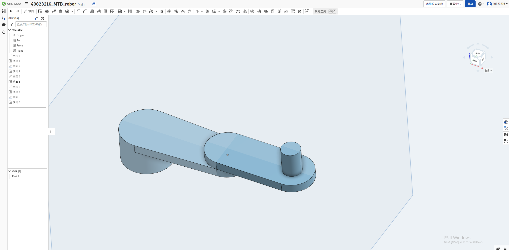
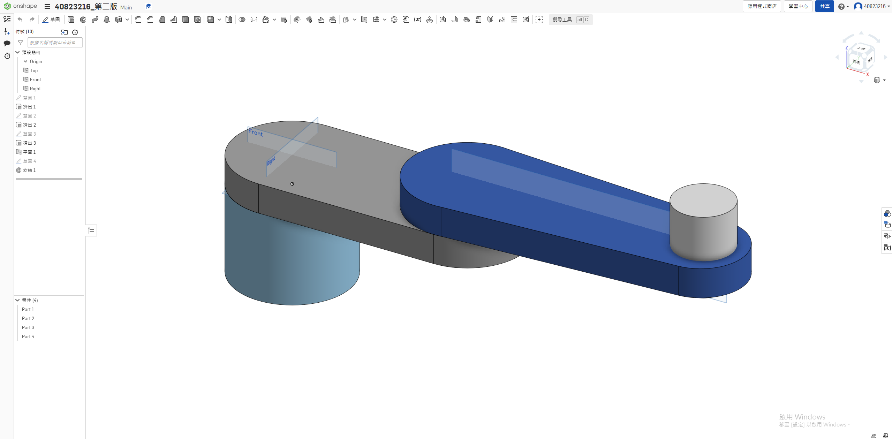

w15 <<
Previous Next >> w5
w16
按照要做MTB_robot 的取放方塊流程規劃
1.先在onshape上繪圖:
第一版網址:onshape網址
第一版stl檔:MTB_robot_stl

第二版網址: onshape網址
第二版stl壓縮檔:MTB_robot_第二版

onshape_影片
2. 建立 CoppeliaSim 4.1.0 MTB robot 場景
Google Drive:w16_exam
3. 手臂末端加入 components-gripper-suction pad 吸盤
4. 逆向運動學函式
Google Drive:lua_zip連結
主程式+副程式(moving)
function moving(x,y)
a=0.4
b=0.4
c=math.pow((math.pow(x,2)+math.pow(y,2)),0.5)
s=(a+b+c)/2
area=math.pow((s*(s-a)*(s-b)*(s-c)),0.5)
h=area/(2*c)
deg1_base=math.atan(x/y)
if x<0 and y<0 then
deg1_base=deg1_base+math.pi
end
deg1_tri=math.asin(h/a)
deg1=deg1_base+deg1_tri
deg2=math.pi-(0.5*math.pi-deg1_tri)-math.acos(h/b)
deg3=deg2-deg1
sim.setJointTargetPosition(joint01,deg1)
sim.setJointTargetPosition(joint02,-deg2)
sim.setJointTargetPosition(joint03,deg3)
end
function sysCall_threadmain()
t=1 //延遲時間T=1
joint01=sim.getObjectHandle('joint1') //設定軸得名稱和是哪個軸
joint02=sim.getObjectHandle('joint2')
joint03=sim.getObjectHandle('joint3')
jointz=sim.getObjectHandle('jointz')
sim.setJointTargetPosition(joint01,0) //將所有軸都歸0
sim.setJointTargetPosition(joint02,0)
sim.setJointTargetPosition(joint03,0)
sim.setJointTargetPosition(jointz,0)
sim.setIntegerSignal("pad_switch",1) //吸盤吸住的程式
sim.setJointTargetPosition(jointz,-0.035) //吸盤下降3.5mm
sim.wait(t) //延遲時間(t)
sim.setJointTargetPosition(jointz,0)
sim.wait(t)
while sim.getSimulationState()~=sim.simulation_advancing_abouttostopre do //lua迴圈程式
moving(0.2,0.7) //所求的x.y座標
sim.wait(t)
sim.setIntegerSignal("pad_switch",0)
sim.wait(t)
sim.setIntegerSignal("pad_switch",1)
sim.setJointTargetPosition(jointz,-0.035)
sim.wait(t)
sim.setJointTargetPosition(jointz,0)
sim.wait(t)
moving(-0.3,-0.55)
sim.wait(t)
sim.setIntegerSignal("pad_switch",1)
sim.wait(t)
sim.setIntegerSignal("pad_switch",1)
sim.setJointTargetPosition(jointz,-0.035)
sim.wait(t)
sim.setJointTargetPosition(jointz,0)
sim.wait(t)
end
end
function sysCall_cleanup()
-- Put some clean-up code here
end
-- See the user manual or the available code snippets for additional callback functions and details
吸盤程式
--參考40823214的程式
function sysCall_init()
objectHandle=sim.getObjectHandle('suctionPad')
sim.setUserParameter(objectHandle,'@enable','')
modelBase=sim.getObjectAssociatedWithScript(sim.handle_self)
robotBase=modelBase
while true do
robotBase=sim.getObjectParent(robotBase)
if robotBase==-1 then
robotName='Dobot'
break
end
robotName=sim.getObjectName(robotBase)
suffix,suffixlessName=sim.getNameSuffix(robotName)
if suffixlessName=='Dobot' then
break
end
end
s=sim.getObjectHandle('suctionPadSensor')
l=sim.getObjectHandle('suctionPadLoopClosureDummy1')
l2=sim.getObjectHandle('suctionPadLoopClosureDummy2')
b=sim.getObjectHandle('suctionPad')
suctionPadLink=sim.getObjectHandle('suctionPadLink')
local gripperBase=sim.getObjectAssociatedWithScript(sim.handle_self)
infiniteStrength=sim.getScriptSimulationParameter(sim.handle_self,'infiniteStrength')
maxPullForce=sim.getScriptSimulationParameter(sim.handle_self,'maxPullForce')
maxShearForce=sim.getScriptSimulationParameter(sim.handle_self,'maxShearForce')
maxPeelTorque=sim.getScriptSimulationParameter(sim.handle_self,'maxPeelTorque')
sim.setLinkDummy(l,-1)
sim.setObjectParent(l,b,true)
m=sim.getObjectMatrix(l2,-1)
sim.setObjectMatrix(l,-1,m)
end
function sysCall_cleanup()
sim.setLinkDummy(l,-1)
sim.setObjectParent(l,b,true)
m=sim.getObjectMatrix(l2,-1)
sim.setObjectMatrix(l,-1,m)
end
function sysCall_sensing()
parent=sim.getObjectParent(l)
local sig=sim.getIntegerSignal("pad_switch")
if (not sig) or (sig==0) then
if (parent~=b) then
sim.setLinkDummy(l,-1)
sim.setObjectParent(l,b,true)
m=sim.getObjectMatrix(l2,-1)
sim.setObjectMatrix(l,-1,m)
end
else
if (parent==b) then
index=0
while true do
shape=sim.getObjects(index,sim.object_shape_type)
if (shape==-1) then
break
end
local res,val=sim.getObjectInt32Parameter(shape,sim.shapeintparam_respondable)
if (shape~=b) and (val~=0) and (sim.checkProximitySensor(s,shape)==1) then
-- Ok, we found a respondable shape that was detected
-- We connect to that shape:
-- Make sure the two dummies are initially coincident:
sim.setObjectParent(l,b,true)
m=sim.getObjectMatrix(l2,-1)
sim.setObjectMatrix(l,-1,m)
-- Do the connection:
sim.setObjectParent(l,shape,true)
sim.setLinkDummy(l,l2)
break
end
index=index+1
end
else
-- Here we have an object attached
if (infiniteStrength==false) then
-- We might have to conditionally beak it apart!
result,force,torque=sim.readForceSensor(suctionPadLink) -- Here we read the median value out of 5 values (check the force sensor prop. dialog)
if (result>0) then
breakIt=false
if (force[3]>maxPullForce) then breakIt=true end
sf=math.sqrt(force[1]*force[1]+force[2]*force[2])
if (sf>maxShearForce) then breakIt=true end
if (torque[1]>maxPeelTorque) then breakIt=true end
if (torque[2]>maxPeelTorque) then breakIt=true end
if (breakIt) then
-- We break the link:
sim.setLinkDummy(l,-1)
sim.setObjectParent(l,b,true)
m=sim.getObjectMatrix(l2,-1)
sim.setObjectMatrix(l,-1,m)
end
end
end
end
end
end
5. Python remote API 逆向運動學函式
Google Drive:python_remode_api.zip連結
Python remote API 程式
import sim as vrep
import math
import random
import time
import math
def moving(x,y):
a=0.4
b=0.4
c=math.pow((math.pow(x,2)+math.pow(y,2)),0.5)
s=(a+b+c)/2
area=math.pow((s*(s-a)*(s-b)*(s-c)),0.5)
h=area/(2*c)
deg1_base=math.atan(x/y)
if x<0 and y<0 :
deg1_base=deg1_base+math.pi
deg1_tri=math.asin(h/a)
deg1=deg1_base+deg1_tri
deg2=math.pi-(0.5*math.pi-deg1_tri)-math.acos(h/b)
deg3=deg2-deg1
vrep.simxSetJointTargetPosition(clientID,joint01,deg1,opmode)
vrep.simxSetJointTargetPosition(clientID,joint02,-deg2,opmode)
vrep.simxSetJointTargetPosition(clientID,joint03,deg3,opmode)
print ('Start')
vrep.simxFinish(-1)
clientID = vrep.simxStart('127.0.0.1', 19997, True, True, 5000, 5)
if clientID != -1:
print ('Connected to remote API server')
res = vrep.simxAddStatusbarMessage(
clientID, "This is teach by 40823216 ",
vrep.simx_opmode_oneshot)
if res not in (vrep.simx_return_ok, vrep.simx_return_novalue_flag):
print("Could not add a message to the status bar.")
opmode = vrep.simx_opmode_oneshot_wait
STREAMING = vrep.simx_opmode_streaming
vrep.simxStartSimulation(clientID, opmode)
ret,joint01=vrep.simxGetObjectHandle(clientID,"joint1",opmode)
ret,joint02=vrep.simxGetObjectHandle(clientID,"joint2",opmode)
ret,joint03=vrep.simxGetObjectHandle(clientID,"joint3",opmode)
ret,jointz=vrep.simxGetObjectHandle(clientID,"jointz",opmode)
vrep.simxSetJointTargetPosition(clientID,joint01,0,opmode)
vrep.simxSetJointTargetPosition(clientID,joint02,0,opmode)
vrep.simxSetJointTargetPosition(clientID,joint03,0,opmode)
vrep.simxSetIntegerSignal(clientID,"pad_switch",1,opmode)
vrep.simxSetJointTargetPosition(clientID,jointz,-0.032,opmode)
time.sleep(1)
vrep.simxSetJointTargetPosition(clientID,jointz,0,opmode)
while True:
moving(0.2,0.7)
time.sleep(2)
vrep.simxSetIntegerSignal(clientID,"pad_switch",0,opmode)
time.sleep(2)
vrep.simxSetIntegerSignal(clientID,"pad_switch",1,opmode)
vrep.simxSetJointTargetPosition(clientID,jointz,-0.032,opmode)
time.sleep(2)
vrep.simxSetJointTargetPosition(clientID,jointz,0,opmode)
moving(-0.3,-0.55)
time.sleep(2)
vrep.simxSetIntegerSignal(clientID,"pad_switch",0,opmode)
time.sleep(2)
vrep.simxSetIntegerSignal(clientID,"pad_switch",1,opmode)
vrep.simxSetJointTargetPosition(clientID,jointz,-0.032,opmode)
time.sleep(2)
vrep.simxSetJointTargetPosition(clientID,jointz,0,opmode)
w15 <<
Previous Next >> w5